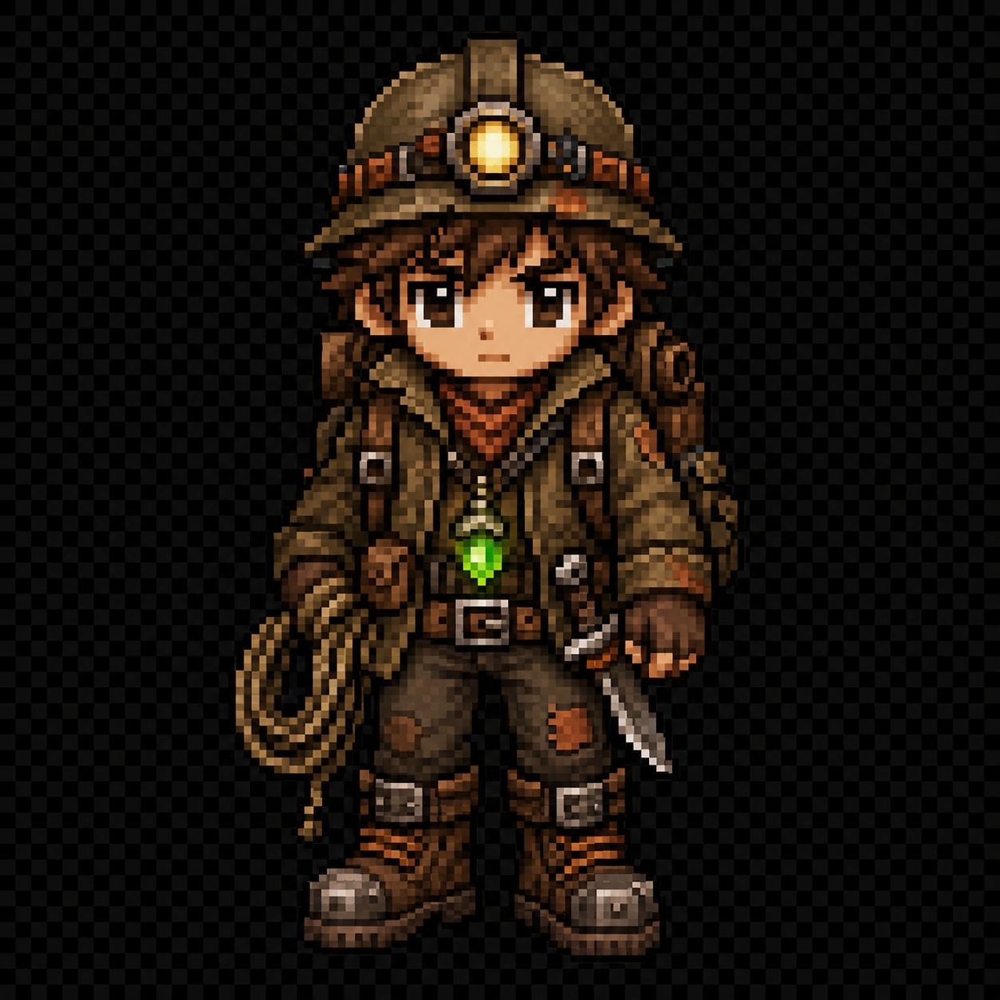
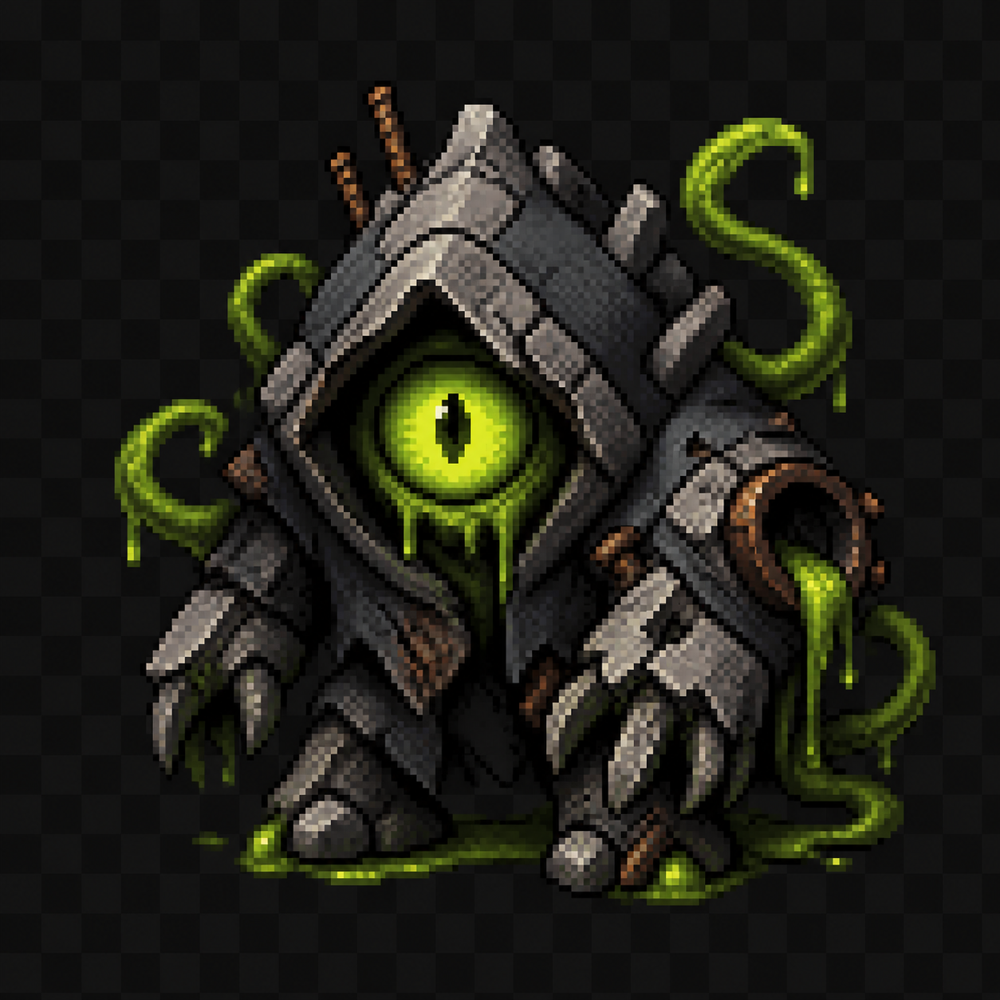
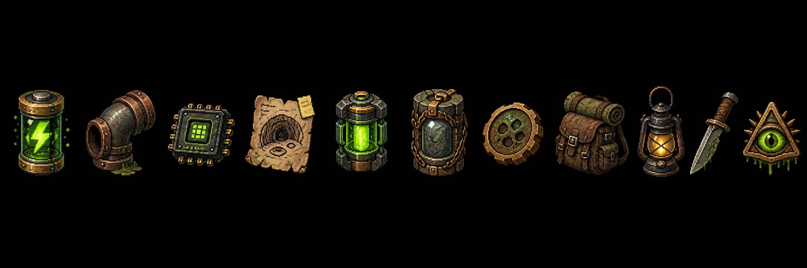

1F

Unlit Halls
지하로 가라앉은 도시
무언가 사라지고 있다



진실 조각 0/6 — 아직 아무것도 모른다.
다음 목표 · 2층 도달
1F
상황
아래가 열린다.
조명또렷함 100%
멘탈80%
기척정적
대기
아래가 열린다.
회수물
아래가 열린다.
지상으로 나왔다
이 짐, 누구에게 넘길까?
어떻게 지상으로 나갈까?
공식 출구 — 안전하지만 검문이 있다. 이번엔 무사히 통과했다.
살아 나왔다
판매 +0 RP
보유 RP 0 · 의심도 0
다음 목표 · 2층 도달
이번엔 하나만 고르자.
기절했다.
정신이 끊겼다. 깨어났을 때 런은 끝나 있었다.
강화와 남은 RP는 유지된다.
진실 조각 6/6
여섯 조각이 맞물렸다. 이제 그림이 보인다.
위원회는 싱크홀을 막던 게 아니었다. 아래에서 올라오는 물건을 회수해 다시 봉인해 왔다.
봉인 유물의 직인은 지상 허가증의 직인과 같다. 이 구멍은 위에서 시작됐다.
그리고 내가 들고 나온 물건 때문에, 아래가 한 층 더 열린다.
진실 조각 6/6 — 이제 안다.